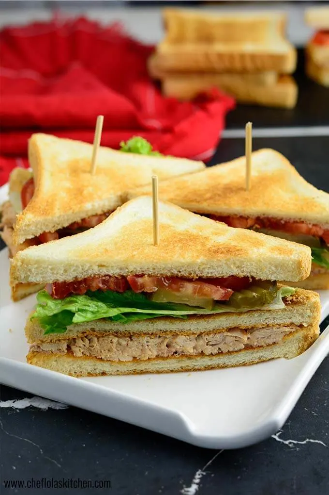

Sandwich

Chicken Club Sandwich
Let me introduce you to this simple, satisfying, and flavorful homemade
Chicken Club Sandwich that you can put together in a little time. This is
the juncture where simple meets delicious!
It is made with leftover or freshly cooked Chicken shredded and tossed in
Ketchup and Mayonnaise with a splash of lemon Juice. Sandwiched between
layers of freshly toasted bread sandwiched with another layer of Lettuce
and Fresh Tomatoes and Pickles.
Ingredients
- 1/2 pound boneless Chicken
- 2 large Tomatoes Cut into slices
- 12 slices Pickles or as desired
- 9 slices Bread Toasted
- 3 Tbsp Mayonnaise
- 3 Tbsp Ketchup
- 1 Bunch Lettuce leaves
- 1 tbsp Lemon Juice
- Salt and Pepper to taste
Steps
-
If using fresh Chicken (If not skip to the next instruction) - Place
chicken breasts into a saucepan, season with Salt and Pepper (or as
desired) and pour enough water to cover it. Place over medium heat and
bring to a boil. Cook until the chicken meat is tender.
-
Transfer the Chicken to a wide plate. If hot, allow it to cool, and
shred the chicken meat with two forks.
-
Transfer the chicken to a deep bowl, add the Mayonnaise, Ketchup, lemon
juice, Salt and black pepper to taste. Mix until everything is well
blended and set aside.
-
Meanwhile, toast 9 slices of bread. Then, lay a slice of toast on a
plate, or a board add a thick layer of the Chicken mixture on it and
cover it up with another layer of toast. Top this layer with the about
two Lettuce leaves, Pickles and Tomato slices and cover it up with the
third slice of toast.
-
Divide the arranged sandwich diagonally into halves or quarters and pin
with a toothpick or a skewer all the way to the bottom to keep it in
place. Enjoy!
Return to Main Page